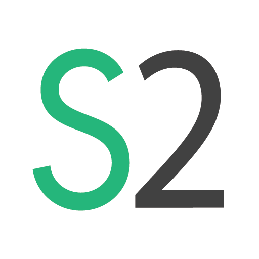

<!DOCTYPE html>
<html>
	<head lang="en">
	<meta charset="utf-8" />
	<meta name="viewport" content="width=device-width, initial-scale=1.0, maximum-scale=1.0, minimum-scale=1.0, user-scalable=no" />

    <meta charset="UTF-8">
    <title>SAGE2</title>

	<link rel="stylesheet" type="text/css" href="css/fonts.css"/>
	<link rel="stylesheet" type="text/css" href="css/app.css" media="screen" />

	<!-- SAGE2 code -->
	<script async src="src/md5.js"></script>
	<script async src="src/websocket.io.js"></script>
	<script async src="src/SAGE2_runtime.js"></script>
	<script async src="src/SAGE2_interaction.js"></script>

	<script type="text/javascript" src="lib/webix/webix.js"></script>
	<link type="text/css" rel="stylesheet" href="lib/webix/skins/compact.css">


      <script type="text/javascript">
const remote   = require('electron').remote;
const Menu     = remote.Menu;
const MenuItem = remote.MenuItem;
const Tray     = remote.Tray;

// Tray
var appIcon = null;
appIcon = new Tray(__dirname + '/images/S2.png');
var trayMenu = Menu.buildFromTemplate([
	{ label: 'Screen sharing', type: 'checkbox', checked: false, click: sharing_func },
	{ label: 'Quit', type: 'normal', role: 'quit' }
]);
appIcon.setHighlightMode(false);
appIcon.setToolTip('SAGE2');
appIcon.setContextMenu(trayMenu);

function sharing_func(menuitem, win, event) {
	console.log('Event', menuitem.checked);
	if (menuitem.checked) {
		sharescreen_func();
	} else {
		stopsharing_func();
	}
}


var template = [
  {
    label: 'Edit',
    submenu: [
      {
        label: 'Cut',
        accelerator: 'CmdOrCtrl+X',
        role: 'cut'
      },
      {
        label: 'Copy',
        accelerator: 'CmdOrCtrl+C',
        role: 'copy'
      },
      {
        label: 'Paste',
        accelerator: 'CmdOrCtrl+V',
        role: 'paste'
      }
    ]
  }];

if (process.platform == 'darwin') {
  var name = require('electron').remote.app.getName();
  template.unshift({
    label: name,
    submenu: [
      {
        label: 'About ' + name,
        role: 'about'
      },
      {
        label: 'Hide ' + name,
        accelerator: 'Command+H',
        role: 'hide'
      },
      {
        label: 'Hide Others',
        accelerator: 'Command+Alt+H',
        role: 'hideothers'
      },
      {
        label: 'Show All',
        role: 'unhide'
      },
      {
        type: 'separator'
      },
      {
        label: 'Quit',
        accelerator: 'Command+Q',
        click: function() {
			stopsharing_func();
        	require('electron').remote.app.quit();
        }
      },
    ]
  });
}

// SAGE2 code
var wsio;
var interactor;

navigator.getUserMedia = (navigator.getUserMedia  || navigator.webkitGetUserMedia ||
  navigator.mozGetUserMedia || navigator.msGetUserMedia);

var show_browser = true;
var save_width   = 1200;
var hasMouse     = true;

// Explicitely close web socket when web browser is closed
window.onbeforeunload = function() {
	// stop screen sharing
	stopsharing_func();
};

/**
 * When the page loads, SAGE2 starts
 *
 */
window.addEventListener('load', function(event) {
	SAGE2_init();
});

function fileUploadStart(files) {
}
function fileUploadProgress(percent) {
}
function fileUploadComplete() {
}

function isValidURL(str) {
	var pattern1 = new RegExp('^(https?:\\/\\/)');
	var pattern2 = new RegExp('^(http?:\\/\\/)');
	return pattern1.test(str) || pattern2.test(str);
}
function isValidWebsocket(str) {
	var pattern1 = new RegExp('^(wss?:\\/\\/)');
	var pattern2 = new RegExp('^(ws?:\\/\\/)');
	return pattern1.test(str) || pattern2.test(str);
}

function geoLocation() {
	let location;
	if("geolocation" in navigator) {
		console.log('LOC0> Location services available')
		navigator.geolocation.getCurrentPosition(function(position) {
			console.log('LOC1>', position);
			location = {
				lat: position.coords.latitude,
				lng: position.coords.longitude
			}
			console.log('LOC2>', location);
		}, function (err) {
			console.warn('User geolocation error:', err.message, err.code);
		}, {
			enableHighAccuracy: true, // high-precision
			timeout: 5000,  // 5 sec. maximum
			maximumAge: 0   // get a fresh value
		});
	}
}


/**
 * Entry point of the user interface
 *
 * @method SAGE2_init
 */
function SAGE2_init() {
	console.log('SAGE2 Init');

	geoLocation();

	var menu = [
		{ value: "Home"},
		{ value: "Messages"},
		{ value: "Settings",  submenu: ["Edit Name", "Change Password", "Alerts"] }
	];
  
	var mainUI = webix.ui({
		"id": "mainUI",
		"container": "wrapper",
		id: "column1",
		width: 300,
		// autowidth: true,
		rows : [
		{
			cols : [
				{
					label: "URL", view: "text",
					id: "sage2_id",
					placeholder: "SAGE2 host, hostname[:port]",
					value: "wss://localhost:9090"
				}
			]
		},
		{
			cols : [
				{
					label: "Passcode", view: "text",
					type:'password',
					id: "passcode_id",
					placeholder: "Access code (optional)"
				}
			]
		},
		{
			cols : [
				{
					value: "Connect", view: "button",
					id: "connect_id",
					click: connect_func,
				}
			]
		},
		// {
		// 	cols : [
		// 		{
		// 			value: "Share this window", view: "button",
		// 			id: "share_id",
		// 			click: share_func,
		// 		}
		// 	]
		// },
		{
			cols : [
				{
					value: "Share your screen", view: "button",
					id: "sharescreen_id",
					click: sharescreen_func,
				}
			]
		},
		{
			cols : [
				{
					value: "Stop sharing", view: "button",
					click: stopsharing_func,
				}
			]
		},
		{
			value: "Start pointer", view: "button",
			id: "pointer_id",
			click: startpointer_func,						
		},
		{
			template: '',
			height: 170,
		}
		],
		ready: function() {
			console.log('Webix ready')
			$$("url_id").focus();
		}
	});

	window.addEventListener('resize', doResize);
	doResize();
}

function showMessage(msg) {
	webix.alert({
		type: "alert-warning",
		title: "SAGE2 (tm)",
		// width: 500,
		ok: "OK",
		text: msg
	});
}

function connect_func() {
	if (wsio) {
		wsio.close();
	}

	var url   = $$('sage2_id').getValue();
	var pcode = $$('passcode_id').getValue();

	if (! isValidWebsocket(url)) {
		url = 'wss://' + url;
		$$('sage2_id').setValue(url);
	}
	console.log('Connecting to', url, pcode);

	// Detect which browser is being used
	SAGE2_browser();

	// Create a connection to the SAGE2 server
	wsio = new WebsocketIO(url);
	// socket close event (i.e. server crashed)
	wsio.on('close', function(evt) {
		showMessage("Connection closed");
	});
	wsio.open(function() {
		console.log("Websocket opened");

		setupListeners();

		var clientDescription = {
			clientType: "sageUI",
			requests: {
				config:  true,
				version: true,
				time:    false,
				console: false
			},
			browser: __SAGE2__.browser,
			session: pcode ? md5(pcode) : null
		};
		wsio.emit('addClient', clientDescription);

		// Interaction object: file upload, desktop sharing, ...
		interactor = new SAGE2_interaction(wsio);
		interactor.setFileUploadStartCallback(fileUploadStart);
		interactor.setFileUploadProgressCallback(fileUploadProgress);
		interactor.setFileUploadCompleteCallback(fileUploadComplete);
	}, function (err) {
		// open failed
		showMessage(err);
		$$('connect_id').$view.querySelector('button').style.backgroundColor = "#ff4000";
	});
}

function share_func() {
	if (interactor) {
		if (!interactor.broadcasting) {
			interactor.captureDesktop("window");
			$$('sharescreen_id').$view.querySelector('button').style.backgroundColor = "#00b359";
			// update tray item
			trayMenu.items[0].checked = true;
		}
	} else {
		showMessage("Connect to server first");
	}
}

function sharescreen_func() {
	if (interactor) {
		if (!interactor.broadcasting) {
			interactor.captureDesktop("screen");
			$$('sharescreen_id').$view.querySelector('button').style.backgroundColor = "#00b359";
			// update tray item
			trayMenu.items[0].checked = true;
		}
	} else {
		showMessage("Connect to server first");
	}
}

function stopsharing_func() {
	if (interactor && interactor.mediaStream !== null) {
		var track = interactor.mediaStream.getTracks()[0];
		track.stop();
		// update tray item
		trayMenu.items[0].checked = false;
		// $$('share_id').$view.querySelector('button').style.backgroundColor = "#3498db";
		$$('sharescreen_id').$view.querySelector('button').style.backgroundColor = "#3498db";
	}
}

function startpointer_func() {
	if (interactor) {
		interactor.startSAGE2Pointer($$('pointer_id').$view.querySelector('button'));
	}
}

function pointerClick(event) {
	console.log('Click')
}
function doResize() {
	// var h = window.innerHeight - 95;
	// document.getElementById('webview_div').style.height = h + 'px';
	// document.getElementById('webview_content').style.height = h + 'px';
	// $$('iframe').config.height = h;
	// $$('iframe').resize();
	// $$('mainUI').resize();
}

function setupListeners() {
	wsio.on('initialize', function(data) {
		console.log('initialize', data);
		interactor.setInteractionId(data.UID);

		// Update button color
		$$('connect_id').$view.querySelector('button').style.backgroundColor = "#00b359";
	});


	// Open a popup on message sent from server
	wsio.on('errorMessage', function(data) {
		console.log('message from server>', data);
	});

	wsio.on('setupDisplayConfiguration', function(config) {
		console.log('Display', config);

		var sage2Min  = Math.min(config.totalWidth, config.totalHeight);
		var screenMin = Math.min(screen.width, screen.height);
		interactor.setPointerSensitivity(sage2Min / screenMin);
	});

	// Server sends the SAGE2 version
	wsio.on('setupSAGE2Version', function(data) {
		console.log('SAGE2: version', data.base, data.branch, data.commit, data.date);
	});

	wsio.on('requestNextFrame', function(data) {
		interactor.requestMediaStreamFrame();
	});

	wsio.on('stopMediaCapture', function() {
		if (interactor.mediaStream !== null) {
			var track = interactor.mediaStream.getTracks()[0];
			track.stop();
		}
	});

	wsio.on('createAppWindowPositionSizeOnly', function() {
		// pass
	});
}

      </script>
  </head>
  <body>

	<div style="width:100%;background-color:#FFFFFF;">
		<div id="wrapper" style="background-color: #ececec;">
		</div>
	</div>

	<canvas id="mediaCanvas" style="display: none;"></canvas>
	<video  id="mediaVideo"  style="display: none;"></video>


  </body>
</html>
